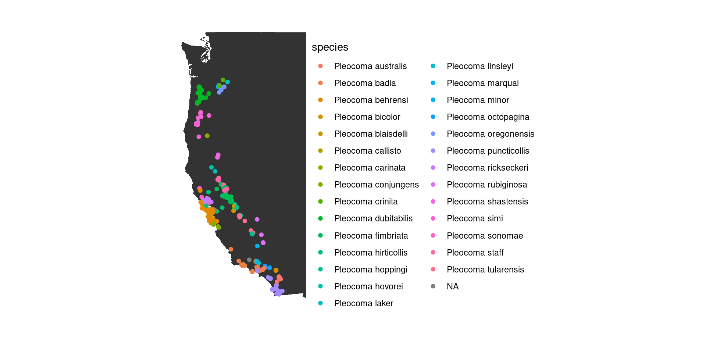

Map Pleocoma distributions and evaluate whether the Pleistocene Missoula floods impacted their distribution in the Willamette Valley.
library(tidyverse)
knitr::opts_chunk$set(comment="", cache=T, warning = F, message = F, fig.path = "images/")
library(sf)
mycrs <- "+proj=longlat +datum=WGS84"
beetle_taxa <- c("Coleoptera", "Pleocomidae", "Scarabaeidae", "Lucanidae")
library(RColorBrewer)
beetle_pal <- set_names(brewer.pal(4, "Set1"), beetle_taxa)Multiple sources place the highest extent of the ~40 Missoula Floods in the Willamette Valley at an elevation of 122 m, although this was locally higher in the Portland Basin as the 150 m Rocky Butte saddle was overtopped (references in Minervini et al. 2003).
This flood extent has been mapped against LIDAR data in the Portland Basin (Burns and Coe 2012).
maxflood <- 122 #in meters
res <- 6 #resolution of elevation histograms = maxflood / res
flood <- data.frame(x = c(-124, -122), y = c(43.5, 46)) #box around the Willamette Valley
flood.sf <- flood %>% st_as_sf(coords = c("x", "y"), crs = mycrs) %>% st_bbox() %>% st_as_sfc()Search GBIF for:
library(rgbif)
#GBIF download in simple format, used for annotation: data/0055359-231002084531237.csv
Pleocomidae.gbif <- occ_search(taxonKey = name_backbone("Pleocomidae")$usageKey, limit=1e4)$data %>%
write_csv("data/Pleocomidae_gbif.csv")
Coleoptera.gbif.flood <- map_dfr(set_names(beetle_taxa)[-2], .id="taxon",
~ occ_search(taxonKey = name_backbone(.x)$usageKey, geometry=st_as_text(flood.sf), limit=1e4)$data) %>%
write_csv("data/Coleoptera_gbif_flood.csv.gz")Add hand-annotated localities, coordinates, and uncertainty estimates for rain beetle occurrences.
#Sheet with JP's hand-annotated localities, coordinates, and uncertainty estimates
Pleocomidae.gbif.newloc <- read_csv("data/Pleocoma log - GBIF20231110newloc.csv") %>%
select(gbifID, newLocality, newLocalityScale, newCoordinateUncertaintyInMeters, newLatLong) %>%
separate(newLatLong, into=c("newLat","newLong"), sep=", ", convert=T)
#Replace some GBIF data with hand annotations
Pleocomidae.gbif.fix <- read_csv("data/Pleocomidae_gbif.csv", guess_max = 2000, col_types=list(recordNumber=col_character())) %>%
left_join(Pleocomidae.gbif.newloc) %>%
mutate(locality=if_else(!is.na(newLocality), newLocality, locality),
decimalLatitude=if_else(!is.na(newLat), newLat, decimalLatitude),
decimalLongitude=if_else(!is.na(newLat), newLong, decimalLongitude),
coordinateUncertaintyInMeters=if_else(!is.na(newCoordinateUncertaintyInMeters),
newCoordinateUncertaintyInMeters, coordinateUncertaintyInMeters),
taxon = "Pleocomidae", .keep="unused")
#filter out uncertain coordinates, including vague localities (>10 km uncertainty) and obscured iNat coordinates
Pleocomidae.gbif.goodcoords <- Pleocomidae.gbif.fix %>%
drop_na(decimalLongitude) %>%
filter(decimalLongitude < -100, #drop fossils in Asia
is.na(coordinateUncertaintyInMeters) | coordinateUncertaintyInMeters <= 10000)
#Convert to spatial objects
Pleocomidae.gbif.sf <- Pleocomidae.gbif.goodcoords %>%
st_as_sf(coords=c("decimalLongitude","decimalLatitude"), crs=mycrs)
Pleocomidae.gbif.flood <- st_intersection(Pleocomidae.gbif.sf, flood.sf)
gbif.flood <- read_csv("data/Coleoptera_gbif_flood.csv.gz", guess_max=20000, col_types=list(georeferencedDate=col_character())) %>%
st_as_sf(coords=c("decimalLongitude","decimalLatitude"), crs=mycrs) %>%
bind_rows(Pleocomidae.gbif.flood)Get elevations of all occurrences and a raster elevation map of the flood area.
library(elevatr)
#zoom level sets resolution, see https://github.com/tilezen/joerd/blob/master/docs/data-sources.md#what-is-the-ground-resolution
Pleocomidae.gbif.sf %>% select(geometry, gbifID) %>%
get_elev_point(src = "aws", z=8) %>% as_tibble() %>% write_csv("data/Pleocomidae_gbif_elev.csv")
gbif.flood %>% select(geometry, gbifID) %>%
get_elev_point(src = "aws", z=11) %>% as_tibble() %>% write_csv("data/gbif_flood_elev.csv")library(terra)
library(tidyterra)
library(elevatr)
flood.raster <- get_elev_raster(gbif.flood, src = "aws", z=8) %>% rast() %>% crop(ext(unlist(flood)))Export table of rain beetle occurrences in the flood area for use in Google Earth.
Imported the CSV and followed these steps for flooding an area in Google Earth to produce this KML file.
Pleocomidae.gbif.sf <- Pleocomidae.gbif.sf %>% select(-elevation) %>% left_join(read_csv("data/Pleocomidae_gbif_elev.csv", col_select = -geometry))
gbif.flood <- gbif.flood %>% select(-elevation) %>% left_join(read_csv("data/gbif_flood_elev.csv", col_select = -geometry) %>% distinct(gbifID, .keep_all = T))
Pleocomidae.gbif.flood <- bind_cols(as_tibble(gbif.flood), st_coordinates(gbif.flood)) %>%
filter(taxon =="Pleocomidae") %>%
select(gbifID, family, species, infraspecificEpithet, sex, eventDate,
decimalLatitude=Y, decimalLongitude=X, coordinateUncertaintyInMeters, elevation,
locality, newLocalityScale, institutionCode, references, occurrenceRemarks, identificationRemarks) %>%
write_csv("data/Pleocomidae_gbif_flood.csv")
library(knitr)
Pleocomidae.gbif.flood %>% filter(elevation <= maxflood, decimalLatitude>43.7) %>% arrange(desc(decimalLatitude)) %>%
kable(caption="Rain beetles found at or below the highest flood")| gbifID | family | species | infraspecificEpithet | sex | eventDate | decimalLatitude | decimalLongitude | coordinateUncertaintyInMeters | elevation | locality | newLocalityScale | institutionCode | references | occurrenceRemarks | identificationRemarks |
|---|---|---|---|---|---|---|---|---|---|---|---|---|---|---|---|
| 4425380958 | Pleocomidae | Pleocoma dubitabilis | NA | NA | NA | 45.52036 | -123.1640 | 200 | 91 | 2.5 miles W Forest Grove | bearing from town | TAMU | https://scan-bugs.org:443/portal/collections/individual/index.php?occid=49272004 | NA | dubitablis |
| 4424622651 | Pleocomidae | Pleocoma dubitabilis | dubitabilis | NA | 2023-10-09 12:00:00 | 45.48513 | -123.2337 | 4 | 95 | Hagg Lake | NA | iNaturalist | https://www.inaturalist.org/observations/186885017 | beetle at Hagg Lake | Nice male and female . |
| 4006502610 | Pleocomidae | Pleocoma dubitabilis | dubitabilis | NA | 2022-10-28 10:50:21 | 45.48343 | -123.2329 | 739 | 92 | Hagg Lake - coords in water | NA | iNaturalist | https://www.inaturalist.org/observations/140305299 | NA | NA |
| 3391643880 | Pleocomidae | Pleocoma dubitabilis | NA | NA | 2021-10-10 08:38:42 | 45.47112 | -123.2145 | 6 | 96 | Hagg Lake | NA | iNaturalist | https://www.inaturalist.org/observations/97781354 | Many walking on the forest floor. Even females were out! I dug little bit of burrows males were congregating but couldn’t find female. I probably need to dig deeper to see the female in burrow. | NA |
| 2981022755 | Pleocomidae | Pleocoma dubitabilis | NA | MALE | 2020-10-31 06:54:59 | 45.47095 | -123.2153 | 16 | 100 | Hagg Lake | NA | iNaturalist | https://www.inaturalist.org/observations/63905041 | This one was dead. | NA |
| 4006659583 | Pleocomidae | Pleocoma dubitabilis | dubitabilis | NA | 2022-10-28 10:29:26 | 45.47047 | -123.2201 | 5 | 96 | Hagg Lake | NA | iNaturalist | https://www.inaturalist.org/observations/140278447 | NA | NA |
| 3947703573 | Pleocomidae | Pleocoma dubitabilis | dubitabilis | NA | 2022-10-23 09:19:33 | 45.47036 | -123.2129 | 4 | 99 | Hagg Lake | NA | iNaturalist | https://www.inaturalist.org/observations/139762733 | NA | NA |
| 3385136078 | Pleocomidae | Pleocoma dubitabilis | NA | NA | 2021-10-02 06:14:44 | 45.46984 | -123.2128 | 48 | 106 | Hagg Lake | NA | iNaturalist | https://www.inaturalist.org/observations/96885626 | NA | NA |
| 3415689326 | Pleocomidae | Pleocoma dubitabilis | NA | NA | 2021-11-10 09:17:03 | 44.92119 | -123.0507 | 22 | 102 | Fairmount Park, Salem | NA | iNaturalist | https://www.inaturalist.org/observations/101131656 | NA | NA |
| 3067618704 | Pleocomidae | Pleocoma dubitabilis | NA | MALE | 2019-12-14 09:48:26 | 44.87821 | -123.1376 | 110 | 70 | Sawmill Rd, Salem | NA | iNaturalist | https://www.inaturalist.org/observations/36647406 | NA | Appearance and locality . 6 lams . Cheers ! Gene St. Denis Sierra Nevada Research |
| 4425398914 | Pleocomidae | Pleocoma dubitabilis | NA | NA | NA | 44.65699 | -123.2353 | 2000 | 122 | N. of Corvallis, Peavy Arboretum | property | TAMU | https://scan-bugs.org:443/portal/collections/individual/index.php?occid=49272003 | NA | dubitablis |
ggplot(Pleocomidae.gbif.sf) +
geom_polygon(data = map_data("state"), aes(x = long, y = lat, group = group)) +
geom_sf(aes(color=species)) + coord_sf(xlim=c(-125, -115), ylim=c(30, 50)) + theme_void()
ggplot(Pleocomidae.gbif.sf, aes(x=elevation, fill=species)) + facet_wrap(vars(species), scales="free_y") +
geom_histogram(binwidth=100) + guides(fill="none")ggplot(Pleocomidae.gbif.sf %>% filter(stateProvince!="California")) +
geom_polygon(data = map_data("state"), aes(x = long, y = lat, group = group), fill = "grey95", color = "gray40") +
geom_sf(aes(color=species)) + coord_sf(xlim=c(-125, -120), ylim=c(42.5, 47)) + theme_void() land <- colorRampPalette(rev(brewer.pal(4, "Greys")))
flooded <- colorRampPalette(brewer.pal(4, "Blues"))
ggplot(gbif.flood) +
geom_spatraster(data=flood.raster)+
geom_sf(aes(color=taxon, alpha=taxon=="Pleocomidae"), shape=19)+
theme_void() + guides(alpha="none", fill="none") + scale_color_manual("", values=beetle_pal)ggplot(gbif.flood %>% filter(taxon=="Pleocomidae")) +
geom_spatraster(data=flood.raster)+
scale_fill_gradientn(colors=c(flooded(maxflood-minmax(flood.raster)[1]), land(minmax(flood.raster)[2]-maxflood)))+
scale_color_manual(values=c("black","white")) + scale_shape_manual(values=19)+
geom_sf(aes(color=elevation>maxflood))+#, shape = if_else(elevation>maxflood, "1",NA))) +
#geom_sf_text(aes(color=elevation>maxflood, label=if_else(elevation<maxflood, elevation - maxflood,NA)))+
theme_void() + guides(color="none",fill="none", shape="none")flood.north <- data.frame(x = c(-123.5, -122.4), y = c(44.5,45.7))
flood.raster.north <- flood.raster %>% crop(ext(unlist(flood.north)))
ggplot(gbif.flood %>% filter(taxon=="Pleocomidae")) +
geom_spatraster(data=flood.raster.north) +
scale_fill_gradientn(colors=c(flooded(maxflood-minmax(flood.raster.north)[1]), land(minmax(flood.raster.north)[2]-maxflood)))+
scale_color_manual(values=c("black","white")) + scale_shape_manual(values=19)+
geom_sf(aes(color=elevation>maxflood))+#, shape = if_else(elevation>maxflood, "1",NA))) +
#geom_sf_text(aes(color=elevation>maxflood, label=if_else(elevation<maxflood, elevation - maxflood,NA)))+
theme_void() + guides(color="none",fill="none", shape="none") +
coord_sf(ylim=flood.north$y, xlim=flood.north$x)Elevation distributions of beetle observations:
gbif.elev.compare <- bind_rows(bind_cols(as_tibble(gbif.flood), st_coordinates(gbif.flood)) %>%
distinct(taxon, elevation, X, Y), #takes out some collections that have multiple records for the same spot
tibble(taxon="area", elevation = sample(values(flood.raster), 2e4)))
ggplot(gbif.elev.compare, aes(x=elevation, fill=taxon)) + facet_wrap(vars(taxon), scales="free_y", ncol=1) +
geom_histogram(binwidth=maxflood/res, boundary=maxflood) + geom_vline(xintercept=maxflood) +
guides(fill="none") + scale_x_continuous(n.breaks = 13) + coord_cartesian(xlim=c(NA,maxflood*10)) + theme_minimal() +
labs(x="Elevation (m)", y="Occurrences", title="Elevation distribution of beetle records and land in flood region") +
scale_fill_manual(values=c(beetle_pal,area="black"))gbif.elev.perarea <- gbif.elev.compare %>%
mutate(elev.binned = (cut(elevation, breaks = seq(0, maxflood*10, by=maxflood/res), labels=F)-1)*maxflood/res) %>%
count(taxon, elev.binned) %>% pivot_wider(names_from=taxon, values_from=n) %>%
mutate(across(-elev.binned, ~replace_na(.x/area,0))) %>% select(-area)
gbif.elev.perarea %>% pivot_longer(all_of(beetle_taxa), names_to = "taxon", values_to="obs_per_area") %>%
ggplot(aes(x=elev.binned, fill=taxon, y=obs_per_area)) + facet_wrap(vars(taxon), scales="free_y", ncol=1) +
geom_col(just=0)+ geom_vline(xintercept=maxflood) +
guides(fill="none") + scale_x_continuous(n.breaks = 13) + coord_cartesian(xlim=c(NA,maxflood*10)) + theme_minimal() +
labs(x="Elevation (m)", y="Occurrences per area", title="Records of beetles per land area")+
scale_fill_manual(values=beetle_pal)gbif.elev.perarea %>% filter(Coleoptera>0) %>%
mutate(across(-elev.binned, ~.x/Coleoptera)) %>% select(-Coleoptera) %>%
pivot_longer(any_of(beetle_taxa), names_to = "taxon", values_to="obs_per_beetle") %>%
ggplot(aes(x=elev.binned, fill=taxon, y=obs_per_beetle)) + facet_wrap(vars(taxon), scales="free_y", ncol=1) +
geom_col(just=0)+ geom_vline(xintercept=maxflood) +
guides(fill="none") + scale_x_continuous(n.breaks = 13) + coord_cartesian(xlim=c(NA,maxflood*10)) + theme_minimal() +
labs(x="Elevation (m)", y="Occurrences per beetle occurrence", title="Records of beetles relative to total records")+
scale_fill_manual(values=beetle_pal)Pleocomidae.gbif.goodcoords %>%
mutate(region= cut(decimalLatitude, c(0,35,42,90), labels=c("SoCal","NorCal","Oregon")),
month = month(eventDate, label=T))%>% drop_na(month) %>%
ggplot(aes(x=month, fill=region)) + facet_wrap(vars(region), ncol=1, scales="free_y") +
geom_bar() + labs(x="Month", y="Occurrences", title="Rain beetle emergence by region") + theme_minimal() + guides(fill="none")